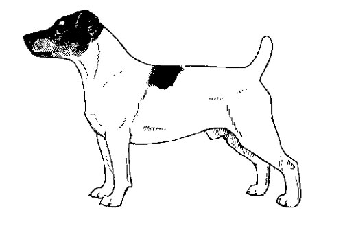

Jack Russel breed standard
General Appearance
The Jack Russell Terrier is a small, agile, active hunting terrier, built to go to ground. The length of back from withers to set-on of tail is slightly longer than the dog’s height at the withers. The length of the front leg (measured from point of elbow to the ground) is approximately equal to one-half of the dog’s height at the withers. The body is capable of being spanned by an average man’s hands placed behind the front legs. The head is moderately broad, with a flat skull, a well-defined stop, and a powerful muzzle that is slightly shorter than the skull. Ears are button or drop, and very mobile. The tail is straight, set high, and, if docked, is normally docked to a length where the tip is level with the top of the ears. The skin is thick, and the coat, whether wiry or smooth, is always dense. The Jack Russell Terrier is solid white, or predominately white with black, tan or brown markings. The Jack Russell Terrier should be evaluated as a working terrier, and exaggerations or faults should be penalized in proportion to how much they interfere with the dog’s ability to work. Scars should neither be penalized nor regarded as proof of a terrier’s working abilities.Characteristics
The Jack Russell Terrier is a bold, friendly, active and alert hunting terrier, built for work underground. This breed is notoriously fearless and requires little encouragement to go to ground. Aggression towards anything other than legitimate quarry detracts from the dog’s ability as a working terrier, and should be discouraged as much as possible. This is a high-energy breed and is happiest in an environment where there is lots of regular activity.Head
The head is proportionate to the size of the body. When viewed from the front, it should resemble a triangle. When viewed from the side, the muzzle is slightly shorter than the skull and joined by a defined stop. The planes of the skull and muzzle are parallel.SKULL
The skull is flat and moderately broad, tapering slightly toward the muzzle. Cheeks are well developed.Serious Faults: Apple or domed skull.
MUZZLE
The muzzle is strong, with powerful, muscular jaws. There is a minimum of falling away under the eye, giving a moderately chiseled look. Lips are tight and darkly pigmented.Fault: Weak jaw.
TEETH
The Jack Russell Terrier has a complete set of comparatively large, evenly spaced, white teeth meeting in a scissors bite.Disqualifications: Undershot or overshot bite.
NOSE
The nose is black and fully pigmented.Disqualifications: Brown or liver nose; absence of pigment.
EYES
Eyes are deep set, almond shaped, dark in color, with a mischievous, intelligent expression. Eyelids are tight. Eyerims are black.Faults: Light eyes; full, round eyes; triangular eyes.
Disqualification: Blue eye.
EARS
The Jack Russell Terrier has small, V-shaped button or drop ears of great mobility. Ear leather is soft and fine. Dogs with button or drop ears may occasionally hold an ear erect. This shall be severely penalized in the show ring but does not disqualify the dog for registration purposes.Serious Fault: Heavy, hound-like ears. Disqualification: Permanently erect ear. This disqualification shall not apply when the erect ear is the result of accident or injury.
Neck
The neck is clean, muscular, and of sufficient length to enable the dog’s mouth to extend beyond its forepaws when working underground. The neck gradually widens from the nape and blends smoothly into the shoulders.Forequarters
Shoulders are long, sloping, smoothly muscled, and well laid back. The upper arm is sufficiently long to ensure that the elbows are set well under the body, and forms an apparent 90-degree angle with the shoulder blade.The forelegs are strong, straight, and moderately well boned. The elbows are set close to the body, but able to move freely in action. The pasterns are short, powerful, straight, and flexible. When viewed in profile, the pasterns are nearly erect.
Faults: Bowed legs; fiddle front; down in pasterns; toes turned out; knuckling over or any other misalignment of joints; out at elbow.
Body
A properly proportioned Jack Russell Terrier is slightly longer than tall. The length of back from withers to set-on of tail is slightly longer than the height, measured from withers to ground. The Jack Russell Terrier is perfectly designed to go to ground. This requires a chest of sufficient depth to give good heart and lung room, but without so much depth and width that the dog is encumbered underground. The well-sprung ribs extend well back, but must be capable of being spanned behind the shoulder by an average man’s hand. The chest must be capable of being compressed so that the dog is unhindered when working underground. The back is of moderate length, and level, blending into a muscular, slightly arched loin with slight to moderate tuck-up. Skin is thick.Serious Faults: Barrel ribs; chest too deep or too broad.
Hindquarters
The hindquarters are strong and muscular. The bone, angulation, and musculature of the hindquarters are in balance with the forequarters. The stifles are well bent, and the hocks are well let down. When the dog is standing, the short, strong rear pasterns are perpendicular to the ground, and viewed from the rear, parallel to one another.Faults: Cow hocks; straight stifles.
Feet
The feet are fairly round, moderately small, well arched, and tight. Pads are hard, tough, and well cushioned. Dewclaws may be removed.Serious Faults: Thin feet; splayed feet.
Tail
The tail is set on high and, if docked, is customarily docked to a length so that the tip of the tail is level with the top of the ears. When moving or alert, the tail may be straight or with a slight curve forward and carried erect or gaily. When the dog is at rest, the tail may drop.Coat
The Jack Russell Terrier comes in three coat types. All are dense, hard, and weather resistant, and cover the entire dog, including the belly and underside of the thighs.ROUGH
A double coat consisting of a short, dense undercoat, and very dense, wiry outer coat. Hair over the eyes and on the muzzle will form eyebrows and a beard. The outer coat should not be so long as to obscure the outline of the dog.BROKEN
Any intermediate coat between a rough and smooth coat. The broken coat lies closer to the body than a rough coat and has longer guard hairs than a smooth coat. A broken-coated dog may or may not have face furnishings.SMOOTH
A short, flat coat.Rough- and broken-coated dogs may be stripped to preserve the quality of the coat, but the artfulness of the trimming is not a factor to consider in judging this breed.
Serious Faults: Silky or woolly coat.
Color
Solid white or predominantly white with any combination of black, tan, or brown markings are preferred, but an otherwise good specimen of the breed must not be penalized for heavy body color. Legs, chest and belly must be white. The back and sides of a dog with heavy body coloring must have a minimal amount of white. Any white area may be ticked providing that white predominates.Disqualifications: Any color, pattern, or markings other than listed above; albinism.
Height and Weight
The Jack Russell Terrier is of a size to go to ground. Mature Jack Russell Terriers range in height from 10 to 12 inches, and from about 11 to 13 pounds in weight. Jack Russell Terriers should always be presented in hard, working condition. Dogs outside the approved range of height shall be penalized only to the degree that their size affects their ability to work.Serious Fault: Dogs over 12 inches in height.
Gait
The Jack Russell Terrier moves with a jaunty, confident attitude, conveying the character of the breed. When trotting, the gait is effortless, smooth, powerful, and well coordinated, showing good, but not exaggerated, reach in front and drive behind. The topline remains level with only a slight flexing to indicate suppleness. Viewed from any position, legs turn neither in nor out, nor do feet cross or interfere with each other. As speed increases, feet tend to converge toward centerline of balance. Poor movement should be penalized to the degree to which it reduces the Jack Russell Terrier’s ability to perform the variety of tasks it was bred to do.Disqualifications
(A dog with a Disqualification must not be considered for placement in a conformation event, and must be reported to UKC.)Unilateral or bilateral cryptorchid.
Viciousness or extreme shyness.
Undershot or overshot bite.
Blue eye.
Brown or liver nose.
Absence of pigment in nose.
Permanently erect ear. This disqualification shall not apply when the erect ear is the result of accident or injury.
Any color, pattern, or markings other than listed.
Albinism.
The docking of tails and cropping of ears in America is legal and remains a personal choice. However, as an international registry, the United Kennel Club is aware that the practices of cropping and docking have been forbidden in some countries. In light of these developments, the United Kennel Club feels that no dog in any UKC event, including conformation, shall be penalized for a full tail or natural ears.
United Kennel Club
